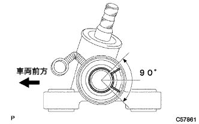

フロントホイールアライメント 調整 |
| 1. タイヤ点検 |
| 2. 車高点検 |
車両のコーナーを大きく上下に動かし、サスペンションを落ち着かせてから車高を点検する。
| タイヤサイズ | A寸法-B寸法[mm] | D寸法-C寸法[mm] |
|---|---|---|
| 175/70R14 | 105 | 35 |
| 3. サイドスリップ点検 |
サイドスリップテスターでサイドスリップを点検する。
基準値外の場合はホイールアライメントを点検する。
| 4. トーイン点検 |
車両をゆすり、車両を安定させる。
車両を直進で5ｍ手押しして前進させる。
 |
トーインゲージの指針高さをフロントホイール軸中心高さに合わせ、タイヤの後ろ側に入れる。
前輪タイヤ各々の後部にトレッドセンターをしるし、マーク間の距離(B寸法)を測定する。
車両をゆっくり押して前進させ、前輪を180°回転させる。
 |
車両前部でマーク間の距離(A寸法)を測定する。
トーインを求める。
| 5. トーイン調整 |
 |
左右のラックエンドのねじ部の長さを測定する。
ラックブーツのクリップをはずす。
タイロッドエンドのロックナットをゆるめる。
ラックエンドねじ部の左右差が基準外の場合は調整を行う。
トーインの測定値がアウト側にはずれる場合は、寸法の短い方のラックエンドを伸ばす方向に調整する。
トーインの測定値がイン側にはずれる場合は、寸法の長い方のラックエンドを縮める方向に調整する。
再度トーインを点検する。
左右のラックエンドを各々の反対方向に同量ずつ回し、トーインが基準値内に入るように調整する。
タイロッドエンドのロックナットを締め付ける。
|  |
プライヤーを使用して、クリップを図の範囲に取り付ける。
| 6. ホイール切れ角点検 |
ターニングラジアスゲージをセットする。
ホイールの切れ角を点検する。
| 内側(点検範囲) | 外側(参考) |
|---|---|
| 39°±2° | 33° |
| 7. キャンバー、キャスター、キングピンアングル点検 |
ターニングラジアスゲージをセットする。
ホイールキャップまたはセンターオーナメントを取りはずす。
フロントホイールアライメントアタッチメントおよびホイールアライメントアダプタをフロントハブに取り付ける。
ゲージのセンターロッド先端をアタッチメントのボルト中心に合わせて取り付ける。
キャンバー、キャスターおよびキングピンアングルを点検する。
| キャンバー | キャスター | キングピンアングル |
|---|---|---|
| -0°45'±45' | 2°00'±45' | 10°30'±45' |
キャンバーキャスターキングピンゲージおよびアタッチメントを取りはずす。
ホイールキャップまたはセンターオーナメントを取り付ける。
| 8. キャンバー調整 |
車両をジャッキアップして、フロントタイヤを取りはずす。
 |
ボルトをはずし、フロントブレーキフレキシブルホースＮｏ．1およびスピードセンサFRをフロントショックアブソーバW/コイルスプリングから切り離す。
 |
ショックアブソーバロワー側の取り付けナット2個を取りはずす。
ナットを仮付けする。
 |
ショックアブソーバのロワー側を動かして、ボルトとステアリングナックルのボルト穴のガタでキャンバーを調整する。
ナットを締め付ける。
|
ボルトで、フロントブレーキフレキシブルホースＮｏ．1およびスピードセンサFRをフロントショックアブソーバW/コイルスプリングに取り付ける。
フロントタイヤを取り付ける。
車両をジャッキダウンして数回上下にゆすり、サスペンションを落ち着かせる。
キャンバーを点検する。
基準値内の場合は、トーイン点検を行う。
基準値外の場合は、ジャッキアップしてフロントタイヤを取りはずし、フロントブレーキフレキシブルホースＮｏ．1およびスピードセンサFRをフロントショックアブソーバW/Mコイルスプリングから切り離して以下の作業を行う。
 |
ショックアブソーバロワー側の取り付けナット2個およびボルト2本を取りはずす。
  |
アジャスティングボルト2本を選択して、車両前方から挿入する。
| キャンバー調整量 | セットボルト | 90105-14146 | 90105-14147 |
|---|---|---|---|
| -1°00'ー-45' | 1、2 | ||
| -45'ー-30' | 1 | 2 | |
| -30'ー-15' | 1 | 2 | |
| -15'ー0' | 1 | 2 | |
| 0'-15' | 1 | 2 | |
| 15'ー30' | 1 | 2 | |
| 30'ー45' | 1 | 2 | |
| 45'ー1°00' | 1、2 |
| 品番 | ボルト径［ｍｍ］ | 調整量 | 識別 |
|---|---|---|---|
| 90105-14146 | 13 | ±15’ | 図のA |
| 90105-14147 | 12 | ±30’ | 図のB |
|
ナット2個を取り付ける。
|
ボルトで、フロントブレーキフレキシブルホースＮｏ．1およびスピードセンサFRをフロントショックアブソーバW/コイルスプリングに取り付ける。
フロントタイヤを取り付ける。
車両をジャッキダウンして数回上下にゆすり、サスペンションを落ち着かせる。
キャンバーを再度点検する。
トーインを点検する。
サイドスリップを点検する。